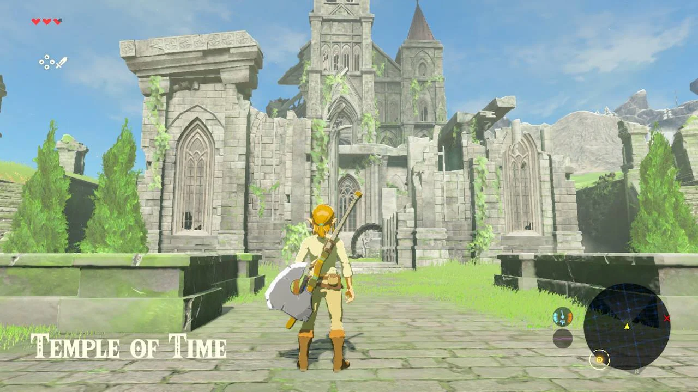
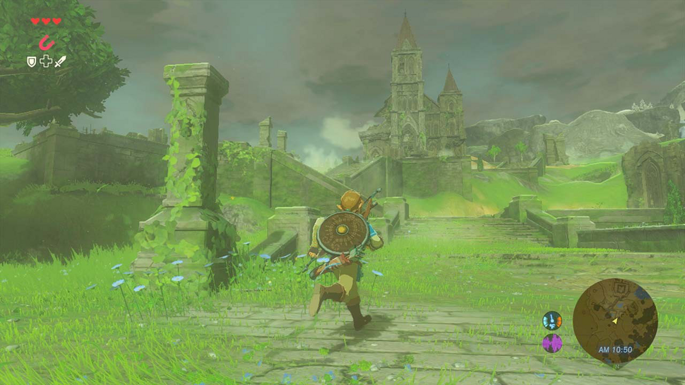
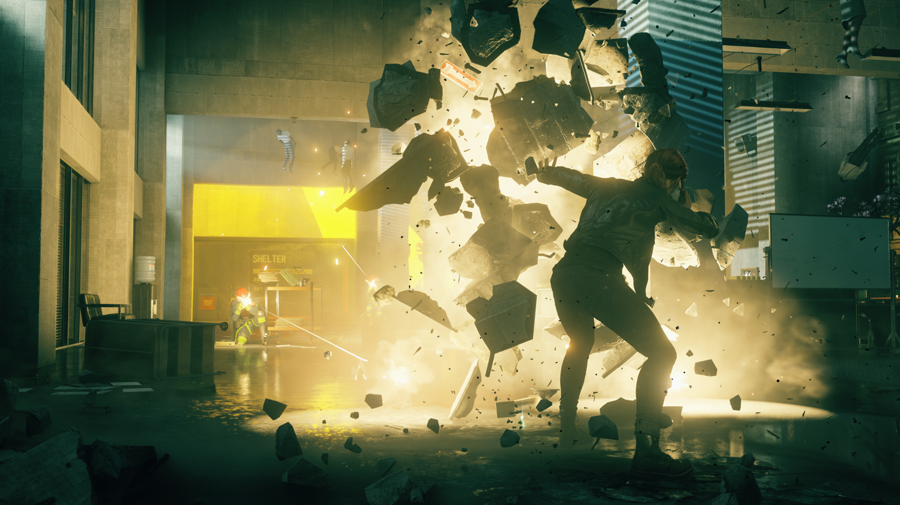
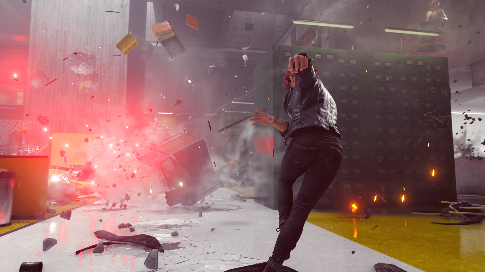
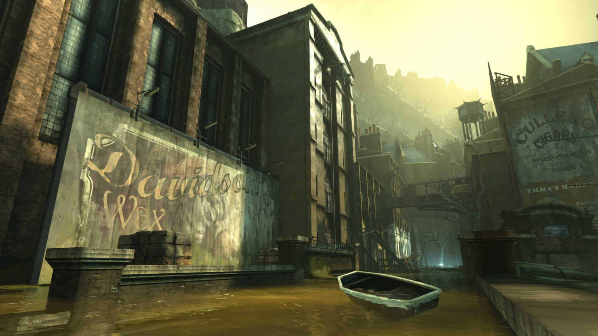
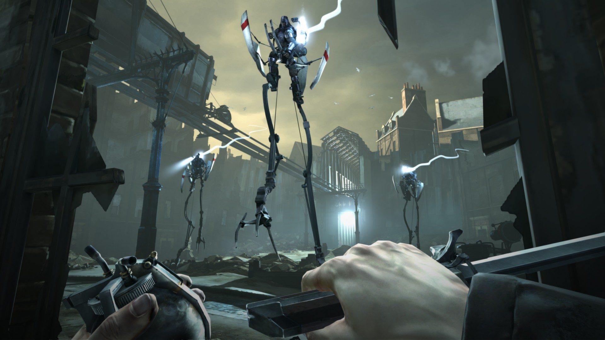
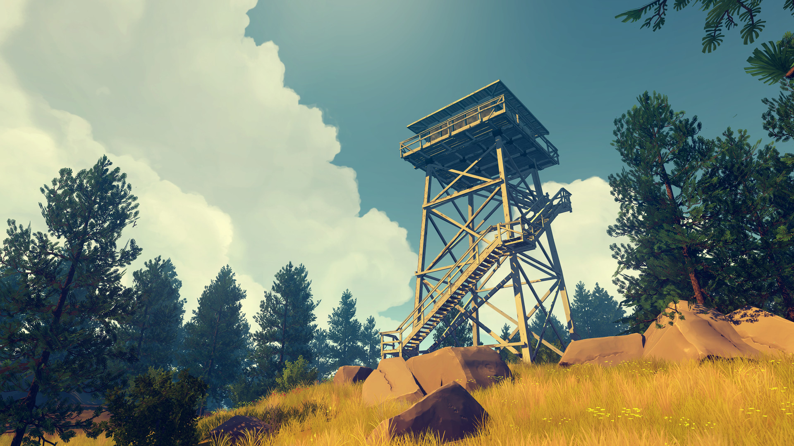
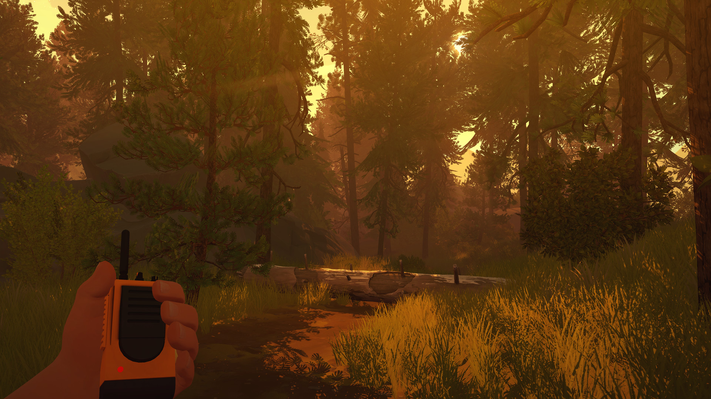

GODOT ENVIRONMENT ART · 2026 / 11 / 13
游戏截图参考下的四组试跑
四组独立首轮与反馈修订表明：素材获取、导入和局部修正能推进，但把素材选择收敛到指定游戏风格仍不稳定。Control 相对最成立；Dishonored 是明显的迁移失败；旷野之息与 Firewatch 仍偏通用风格化套件。没有一组达到参考游戏的美术完成度。
首轮为独立 agent 选材与装配；最终图包含主 agent 的逐图美术反馈，因此不能把修订版当作无人指导首轮水平。每组从独立空项目开始，使用同一份 godot-envart skill。保留首轮与反馈修订的固定机位图。以下“结果图”全部来自 Godot 实际渲染，原作参考图另外标注。
分数为主 agent 的画面观察判断，不是客观性能指标，也不代表用户已验收。1 未体现，2 主要问题明显，3 小样可读但有缺口，4 多视角稳定，5 本次范围内有充分表现。四个不同难度案例、每组一至两次主要反馈修订，不构成统计性评测。
REFERENCE STUDY / BOTW
旷野之息 · 自然遗迹
以晴天遗迹入口为主；阴天图只提供石路边缘、草花与藤蔓分布参考。

原作参考 · botw-temple · 来源

原作参考 · botw-storm · 来源
同机位：首轮 → 修订
反馈与变化：首轮草花巨大、颜色过亮，石材平且前景巨石抢焦点。第二轮缩小植物、换入真实石材纹理、纠正残墙和透景，但覆盖度下降。第三轮在路缘与墙脚补密度。三机位不变；中间第二轮因被覆盖，按当时参数重渲染并明确标注，主对照只用未改动首轮与冻结第三轮。
展开细节与过渡的前后对照
| 能力 | 实际证据与限制 |
|---|
| 找素材 | 新找到并下载 Quaternius Modular Ruins 实际 GLB 集合，选取拱门、石路、墙柱等模块；第二轮另下载 ambientCG Rock030/Ground037。植物与藤蔓使用授权 Standard 缓存，未读旧场景。许可和免费范围清楚，但候选仍集中于熟悉的 Quaternius 体系，选中几何的卡通比例限制了参考贴合。 |
| 细节填充 | 藤蔓、蕨、花、破罐与碎石有明确墙脚位置，修复了悬空残墙。最终草沿路缘聚集；仍有大面积平地、同一草丛重复，石路边缘像整齐台阶，缺少参考里丰富的破损与草石侵入。实例数量不是细节质量的证据。 |
| 风格统一 | 浅灰石与绿植的组合一致，曝光和尺度经过修订更稳。树冠、拱门和石路依旧偏通用卡通套件，石面与背景缺少原作的层次和装饰语言。内部不冲突不等于匹配 BOTW。 |
未通过风格复刻标准。主要上限是资产形体与表面语言、远景构图，继续撒草不能解决。最终为 round-03；round-02 不是未修改原始证据。
项目：project.godot · 打开说明 · 候选与取舍 · 素材来源
REFERENCE STUDY / CONTROL
Control · 档案检查站
混凝土办公检查站，保留巨大结构与普通办公陈设之间的尺度反差。

原作参考 · control-3 · 来源

原作参考 · control-4 · 来源
同机位：首轮 → 修订
反馈与变化：首轮把密集肋板当作混凝土，档案柜背对镜头，照明暗且室内边界未封闭。修订后换平滑板模混凝土与独立地面材质、调转柜体、增加现成文件夹/箱/收发机、移动挡字灯并修门后转折。最终三个固定机位均已复核。
展开细节与过渡的前后对照
| 能力 | 实际证据与限制 |
|---|
| 找素材 | 新下载 3TD 办公包与 Poly Haven 桌、椅、台灯、文件夹、纸箱、收发机及材质；保留作者、CC0 和实际文件。能够发现旧 DAE 问题并转成可用 GLB。但未找到适合的混凝土建筑套件，结构仍自制；首轮仅凭材质名选中错误肋板，说明筛选仍依赖渲染后的纠错。 |
| 细节填充 | 工作桌、文件托盘、柜组、等候椅和排队栏形成可读的档案办理活动；文件、台灯、箱子有支撑与尺度关系。柜顶同箱排列整齐，墙边和大块地面较空，细节密度与参考仍有差距。 |
| 风格统一 | 换材质后，大混凝土结构、现实办公家具、黄黑导向与红色通道基本协调。低精度旧柜体、简化小件与高细度 PBR 家具仍有差异；空间体量和灯光层次远比原作简单。 |
没有达到 Control 的完成度，也未证明能靠现成建筑包搭建该方向。亮点是反馈后能更换不适合素材并恢复整体一致性，主要短板仍是细节密度与精度统一。
项目：project.godot · 打开说明 · 候选与取舍 · 素材来源
REFERENCE STUDY / DISHONORED
Dishonored · 泵房装卸巷
工业旧城小段装卸巷，窄高立面、旧砖石、金属管线与日常杂物。

原作参考 · dishonored-0 · 来源

原作参考 · dishonored-4 · 来源
同机位：首轮 → 修订
反馈与变化：首轮是两排低矮、对称且重复的砖仓，砖纹粗，货箱和工作台内容少。第二轮压低砖纹对比，补抹面分区、远端多层泵房、局部高差、开口桶/木槌和排水沉积。细节有增加，但白色远端楼与旧砖仓不协调，不能把改动数量当成提升幅度。
展开细节与过渡的前后对照
| 能力 | 实际证据与限制 |
|---|
| 找素材 | 新检索下载 32kda Warehouse、Trey Ramm 工业模块与 3TD 工业道具，记录了 Kenney / PBR 工业包等拒绝候选；地面及后补桶/木槌来自既有缓存。来源可用且能处理旧 DAE/LOD，但选中的低矮仓库和粗照片贴图不适合参考的窄高旧城。可用性判断强于美术适配判断。 |
| 细节填充 | 货运托盘、油桶/焊罐、工作台、阀门/软管与排水口提供活动线索，第二轮补了开口容器和工具。多数墙脚与地面仍空，箱桶重复、材质拼接粗，摆放更像分隔的展示组，没有形成参考中的使用磨损和密度变化。 |
| 风格统一 | 低饱和黄绿光和工业构件提供有限的题材关联。主体仍像旧 FPS 砖仓，新增远楼过白过干净，照片砖墙与平涂模块的表面细度不统一，关键建筑比例也未接近参考。 |
这是本轮明显的风格迁移失败案例。继续加雾或小道具无法弥补建筑选型问题，应该回到主体素材与体块选择，而非把当前结果包装成 Dishonored 风格。
项目：project.godot · 打开说明 · 候选与取舍 · 素材来源
REFERENCE STUDY / FIREWATCH
Firewatch · 林间维护点
林间设施与路径，针叶树轮廓、暖草/岩石与冷树影形成清晰层次。

原作参考 · firewatch-1 · 来源

原作参考 · firewatch-2 · 来源
同机位：首轮 → 修订
反馈与变化：首轮树叶像整片塑料扇叶，草粗大，维护点灰暗。第二轮保留原树几何，新下载独立针叶色图/alpha并映射到枝叶卡；加入木纹、路牌、近景明暗和远丘，缩小草同时增密。重新载入时发现材质覆盖没有保存，修复实例编辑状态后重新实渲，最终图中的调整已持久化。
展开细节与过渡的前后对照
| 能力 | 实际证据与限制 |
|---|
| 找素材 | 新下载 Kenney Survival 2.0，官网下载失败后成功改用作者在 OpenGameArt 的上传；树、石与部分植物来自 Quaternius Standard 缓存。第二轮按需要只下载 Poly Haven Pine Tree 01 的独立针叶贴图，避免整树重包。能够做许可明确的来源回退和小范围适配；但主要树形与亭子仍来自不够贴近参考的轻量套件，不能把下载成功算作风格选材成功。 |
| 细节填充 | 维护亭有工作台、工具、木料、容器，路径另一侧以倒木、斧头和碎木形成清理点；路牌信息有用途，地面连续。补丁式木纹、桶和工具的简化几何仍明显，草与远丘覆盖有空洞，近景植物尺度和分布缺少自然变化。 |
| 风格统一 | 冷青树影、暖地面和分枝针叶比首轮更接近参考的色彩关系。针叶近看仍粗长，草与岩石、积木感木亭的精度不同；裸露土坡与参考的茂密黄草/林地相差明显。整体可读不等于 Firewatch 风格达标。 |
未达到参考风格。较有价值的是独立贴图检索、UV适配与材质持久化修正；后续上限取决于更合适的树冠与设施几何，以及更有层次的地表，而不是继续全局调色。
项目：project.godot · 打开说明 · 候选与取舍 · 素材来源
对管线的判断
找素材：四组都留下了真实下载、许可和候选取舍，能够从原有缓存之外获取资源。薄弱点在审美筛选：材质名称相符、题材相近和下载方便，经常被误当作形体、表面频率与参考一致。Control 的肋板和 Dishonored 的低矮砖仓是直接证据。
细节填充：在具体反馈下能组织工作桌、维修区、装卸区和自然边缘，但还不擅长全景密度与层级。常见问题是同物重复、场景中间空、修小草后覆盖骤降。更多实例、更多道具种类不能代替画面中的用途、支撑和疏密关系。
风格统一：这是本轮最弱的能力。agent 能调整色彩、材质和光照，也能发现局部错误；但很容易把不同细度的免费素材拼成通用卡通或旧 FPS 场景。调色无法补救主体比例、树冠形态和立面语言不匹配。不能因为来源免费，就把这次选择失败概括成所有免费素材质量低。
下一次更有价值的改进是提前做主体选材的画面对照：先摆出一段关键建筑/一棵主树和几个代表性 props，在目标光照与近景距离下判断是否值得继续。若主体已偏离参考，回到选材或针对性适配；不要先铺满全场再靠小细节救回来。这是基于本次观察的建议，尚未通过下一轮独立试验验证。
skill 只做了小修订：对应准确图片来源、区分内部统一与参考贴合、植物尺寸和覆盖度联动、冻结评审版本，以及重新加载原生场景检查材质是否保留。测试没有新增控制器、交互面板、玩法回归或性能基准；必要技术检查仅为让真实美术结果可保存、可打开和可出图。